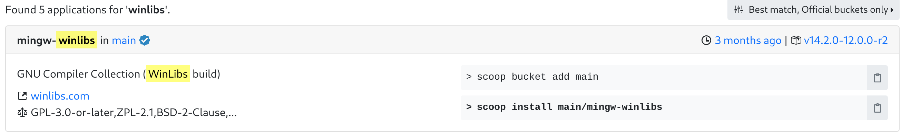

章节列表 ↵
现代CMake教程
C++的复杂系统构建几乎都要用到CMake,虽然国内已有不少关于CMake的教程，但是很多缺少专业性，不够严谨，所以我们需要一个现代的、准确的CMake教程。

什么是CMake？
CMake 是一个跨平台的开源构建系统生成器(也称为元构建工具)，它能够为其他构建工具（如 Visual Studio、Make、Ninja、Xcode）生成配置文件（例如 project.sln、build.ninja、Makefile）
CMake 的特色功能包括：
本质上，构建系统的任务是将源代码文件（如 .cpp）转换为可执行的二进制文件（如 .exe、.lib、.dll）。
为什么不直接使用编译器？
最简单的方法是直接通过命令行调用编译器，如 gcc、cl.exe、clang++ 等工具。但是，当代码库变得复杂时，仅靠命令行不够用了。
单文件编译
对于单个文件的编译，只需一条命令：
g++ -o main.exe main.cpp
多文件编译
当涉及多个源文件时，命令行更复杂：:
# examples/step1
$ tree
├── foo.cpp
├── foo.h
├── main.cpp
$ g++ -o foo.o -c foo.cpp
$ g++ -o main.o -c main.cpp
$ g++ -o step1 main.o foo.o
$ ./step1
43
此外，如果需要同时构建 Debug 和 Release 版本，或者链接外部库，命令行的复杂度将迅速提升，效率也会大大降低。
下一章环境搭建
概念解释
构建与构建系统(buildsystem):
简单来说，软件开发中的构建是将源代码文件“翻译”为可执行二进制代码文件的过程；而构建系统是一组用于辅助和自动化构建过程的软件工具集合。
以下是常见的构建系统:Ninja build system
cmake-buildsystem
bazel.build
Make、Maven 和 Gradle
元构建系统(metabuildsystem):
元构建系统即一个生成其他构建系统的构建系统。如:GYP(Generate Your Projects)
参考文档
https://cliutils.gitlab.io/modern-cmake/README.html
https://cmake.org/cmake/help/v3.20/index.html
https://modern-cmake-cn.github.io/Modern-CMake-zh_CN/
https://xiazuomo.gitbook.io/modern-cmake-chinese/introduction
https://ukabuer.me/blog/more-modern-cmake/
https://www.bilibili.com/video/BV1Mw411M761/
https://www.bilibili.com/video/BV16P4y1g7MH
https://crascit.com/professional-cmake/
https://zh.wikipedia.org/wiki/CMake
https://github.com/Mq-b/CXX_LIB
https://bazel.build/basics?hl=zh-cn
CMake C++环境搭建
C++编译器安装
本教程主要讲解Windows上编译器的安装，仅介绍下面三种安装方式：
1. Visual Studio[推荐]：
安装Visual Studio并勾选Desktop development with C++VS install
2. Scoop(命令行安装工具):
首先在PowerShell执行scoop官网的脚本， 进入winlibs的搜索结果页面 随意选择一个包，并在PowerShell中执行对应的安装命令，例如下面的命令： 
执行这里的命令(scoop install main/mingw-winlibs)会自动将编译器的可执行文件所在目录添加进环境变量，使得PowerShell中能够直接使用g++、gcc了，以及VScode的插件和CMake能够找到对应路径下的编译器。
3. 手动安装winlibs：
推荐下载图中的压缩包(也可以下载右边的不带LLVM的版本，体积更小)，解压后把g++.exe所在目录加入环境变量既可

CMake环境准备和插件配置
实际上很多IDE上都CMake有支持，常见的如：VScode、Visual Studio、Clion， 当然命令行是最通用的方法，这些都不是必要的，只是有高亮和补全会更友好。
- 首先需要安装CMake
- 对于VScode 需要安装下面两个插件，支持高亮和部分补全
安装CMake插件后可能没有完全展示状态条,需要在.vscode/settings.json中加上
"cmake.options.> statusBarVisibility": "compact"
CMake Tools插件的具体功能
安装CMake Tools后状态栏会有我们常用的几个功能，下面介绍一下这些功能具体作用。
构建类型

图中[Debug]是指构建的时候会使用Debug作为构建类型,可以选择的有Debug、Release、RelWithDebInfo 和 MinSizeRel
构建类型会影响下面的内容(影响的命令行参数以GCC为例)：
- 优化级别: [-O1,-O2,-O3]
- 可执行文件是否包含
调试信息: [-g] - 代码中assert是否起作用: [-DNDEBUG]
Debug: 带有Debug信息，支持断点
Release：没有Debug信息，不支持断点，启用代码优化(性能)。
RelWithDebInfo：启用代码优化，带有Debug信息，断点可能不准
MinSizeRel：启用代码体积优化
编译器工具链

图中 [GCC 14.2.1 x86_64] 指 CMake 构建使用的编译器工具链，可能的选择包括：
MSVC (Microsoft Visual C++): Windows 平台下的主流编译器，通常通过 Visual Studio 或 MSBuild 安装。
MinGW/MinGW-w64: 提供 GCC 工具链的 Windows 版本，可以通过安装 MinGW-w64（例如winlibs）。
Clang: 一个跨平台的现代编译器。
工具链不仅仅是指编译器，还包括构建和链接过程所需的其他工具和配置。
工具链
编译器（Compiler）: 例如 g++、cl.exe 或 clang++，用于将 C++ 源代码编译为目标文件。链接器（Linker）: 例如 ld 或 MSVC 自带的链接工具，用于将目标文件链接成可执行文件或库。
归档工具（Archiver）: 例如 ar，用于生成和管理静态库。
调试器（Debugger）: 例如 gdb 或 Visual Studio 调试工具，用于调试程序运行。
构建工具（Build Tools）: 例如 make 或 ninja，用于执行构建规则。
选择构建目标、调试、运行

- 最左的是选择构建目标，也就是选择生成的可执行文件(.exe)，或者构建的其他类型的目标
- 中间的是debug模式运行，当使用Debug|RelWithDebInfo模式或者构建了带有debug信息的程序有效
- 最右是运行，直接运行
下一章现代CMake的核心概念
现代CMake的核心概念
目标:
目标（Target）是现代CMake最核心的概念。目标代表了由CMake构建的可执行文件、库和自定义命令。每个add_library、add_executable和add_custom_target命令都会创建一个目标。
特点
- 全局作用域：可在项目中任何地方使用。
- 自动扩展名：CMake根据平台自动决定扩展名（如Windows下可执行文件为.exe）。
- 动态查询修改：可用set_target_properties和get_target_property动态更新目标属性。
可执行文件（Executable）：通过add_executable命令创建。例如，add_executable(my_app main.cpp)会创建一个名为my_app的可执行文件，其源文件为main.cpp。
库（Library）：通过add_library命令创建。例如，add_library(foo STATIC foo1.c foo2.c)会创建一个名为foo的静态库，其源文件为foo1.c和foo2.c。
自定义目标（Custom Target）：通过add_custom_target命令创建，用于执行自定义的构建任务。
TODO
下一章最小构建.md
最小的CMake构建可执行程序的例子
在本节中，我们将从零开始创建一个简单的 C++ 项目，展示如何使用 CMake 构建一个可执行文件。
准备源代码与配置文件
创建 main.cpp 文件，内容如下：
// main.cpp
#include <iostream>
int main(){
puts("hello cmake");
}
接下来，在项目目录下创建 CMakeLists.txt 文件，内容如下：
# 设置 CMake 的最低版本
cmake_minimum_required(VERSION 3.20)
# 设置项目名称
project(MinimalCMakeProject)
# 定义一个可执行文件
# 第一个参数是目标名称，第二个参数是源文件路径
add_executable(hello_cmake main.cpp)
构建和运行项目
在项目根目录下，创建一个独立的构建目录(也称为原外构建)。
为什么使用独立构建目录？ 这样可以将生成的构建文件与源代码分离，保持项目目录整洁，便于管理。
mkdir build
cd build
cmake ..
.. 表示让 CMake 查找上级目录中的 CMakeLists.txt 文件。
执行后，CMake 会生成平台相关的构建文件，比如：
在 Linux 上，会生成 Makefile。
在 Windows 上，会生成 Visual Studio 工程文件。
成功后，终端将输出类似以下内容：
awe@build$ cmake ..
-- The C compiler identification is GNU 14.2.1
-- The CXX compiler identification is GNU 14.2.1
-- Detecting C compiler ABI info
-- Detecting C compiler ABI info - done
-- Check for working C compiler: /usr/bin/cc - skipped
-- Detecting C compile features
-- Detecting C compile features - done
-- Detecting CXX compiler ABI info
-- Detecting CXX compiler ABI info - done
-- Check for working CXX compiler: /usr/bin/c++ - skipped
-- Detecting CXX compile features
-- Detecting CXX compile features - done
-- Configuring done (0.5s)
-- Generating done (0.0s)
-- Build files have been written to: /home/awe/Desktop/code/node/Modern-CMake/examples/step1/build
- 编译项目 在 build 目录中运行以下命令：
cmake --build .
成功后，你将看到类似如下输出：
awe@build$ cmake --build .
[ 50%] Building CXX object CMakeFiles/hello_cmake.dir/main.cpp.o
[100%] Linking CXX executable hello_cmake
[100%] Built target hello_cmake
编译完成后，可执行文件会出现在 build 目录下，运行它：
./hello_cmake
最终可执行目录结构:
awe@step1$ tree -L 2
.
├── build
│ ├── CMakeCache.txt
│ ├── CMakeFiles
│ ├── cmake_install.cmake
│ ├── hello_cmake
│ └── Makefile
├── CMakeLists.txt
└── main.cpp
为什么CMake构建过程分为两步？
配置阶段 (Configuration)：配置阶段只解析项目结构和生成规则，不执行实际的编译工作。
配置阶段,CMake会解析 CMakeLists.txt 文件，生成适合当前平台的构建文件（如 Makefile 或 Visual Studio 工程文件.sln等）。
构建阶段(Build)：
CMake使用第一步生成的构建文件，通过构建文件调用对应的构建工具(msbuild、make、ninja)完成构建，构建工具来调用具体的编译器（如 g++、clang++ 或 cl.exe）进行编译，生成目标文件（如可执行文件.exe或库）。
CMake配置文件写什么？
CMake无非是根据输入源代码文件(.cpp)和库文件(.lib .a .so)等加工成可执行文件，至少要告诉CMake输入的源文件是什么。 现代CMake构建围绕Target展开，Target可以是可执行文件(.exe),也可是库文件(.lib .a .so)， 甚至是命令(自定义Target)。 对于Windows而言动态库是dll后缀文件，但是windows上无法直接链接.dll，一般是链接生成的.dll的对应的.lib文件，这一步仅仅是能够编译，给编译器提供对应的库信息，在运行时需要动态库在系统的搜索路径下(windows是环境变量PATH中罗列的目录，也可以直接将dll置于exe所在目录，linux一般定义环境变量LD_LIBRARY_PATH所在目录)